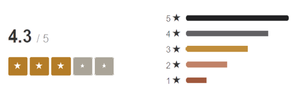

About Us
You are here: Home | About Us
Customer Rating
Cafe.exe is now open and really excited to serve you with high quality local coffee products. We brewed the goodness of handcrafted coffee and espresso drinks. We also serve your all time favorite sweets and pastry that will surely satisfy your sweet tooth
Our dear baristas will grind you great espresso's where you'll taste their love and their passion for the coffee they made just for you.
Our cafe is more than just a coffee shop. Here in Cafe.exe, we believe that coffee is in everything. We make sure that in every coffee that we make, you'lk know what a great coffee is.
MEET THE TEAM
We are team of dedicated professionals, ready to serve you with our delicious coffees, pastries and healthy food.
Andrea Arkov
Barista
Barista is a person, usually a coffeehouse employee, who prepares and serves espresso-based coffee drinks.

Frank Furiuos
Barista
Barista is a person, usually a coffeehouse employee, who prepares and serves espresso-based coffee drinks.

Kara Kulis
Pastry Chef
A pastry chef or pâtissier, is a station chef in a professional kitchen, skilled in the making of pastries, desserts, breads and other baked goods.